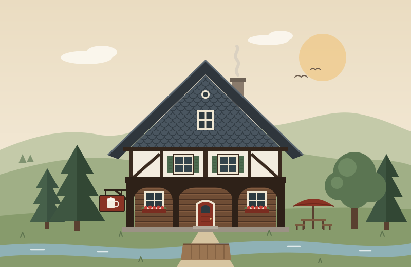

Gutbürgerliche Küche · Ebersbach-Neugersdorf
Hausmannskost im Umgebindehaus
Deftig, frisch und mit Liebe gekocht: In unserem kleinen Familienbetrieb im Spreetal zwischen Ebersbach und Neugersdorf geht niemand hungrig nach Hause.
4,7 von 5 bei über 200 Google-Bewertungen

- Hausmannskost frisch und regional gekocht
- Große Portionen zu fairen Preisen
- Biergarten im Sommer hinter dem Haus
- Parkplätze kostenlos direkt am Haus
Willkommen im Spreetal
Ein Familienbetrieb mit Herz
Wir sind ein kleiner Familienbetrieb und kochen so, wie man es in der Oberlausitz mag: ehrlich, reichlich und mit Liebe zum Detail. Unsere Karte ist bewusst überschaubar – dafür kommt alles frisch auf den Teller.
Ob Stammgast, Familie mit Kindern oder Ausflügler an der Spree: Bei uns sitzen Sie gemütlich, werden freundlich bedient und gehen satt nach Hause. Sonderwünsche erfüllen wir gern, und auch Ihr Hund ist willkommen.
Aus unserer Küche
Speisekarte
Klein, regional und immer frisch – so, wie es sich für eine Oberlausitzer Gaststätte gehört.
Suppen
-
Soljanka –,– €
kräftig und würzig, nach Art des Hauses
Hauptgerichte
-
Schnitzel –,– €
goldbraun gebraten, mit Bratkartoffeln oder Kroketten
-
Amerikanisches Filet –,– €
ein Klassiker unseres Hauses
-
Wurstgericht –,– €
Beschreibung folgt
Vegetarisch
-
Vegetarisches Gericht –,– €
vegetarischName und Beschreibung folgen
Beilagen
-
Bratkartoffeln –,– €
-
Kroketten –,– €
Nachtisch & Getränke
-
Nachtisch –,– €
fragen Sie gern nach, was es heute gibt
-
Bier, Wein, Kaffee & mehr
unsere Getränkekarte bekommen Sie am Tisch
Hinweise zu Allergenen und Zusatzstoffen erhalten Sie gern bei unserem Personal.
Bei uns wird bar bezahlt.
Das sagen unsere Gäste
4,7 Sterne bei über 200 Bewertungen
-
Für sein Geld bekommt man noch richtig gute Portionen.
aus einer Google-Bewertung
-
Das Essen ist lecker, die Portionen groß, der Preis günstig.
aus einer Google-Bewertung
-
Ein kleines familiengeführtes Lokal, welches viel Liebe im Detail erweist.
aus einer Google-Bewertung
Feiern & Gruppen
Feiern im Spreetal
Geburtstag, Familienfeier oder Vereinsabend: Bei uns finden auch größere Runden Platz. Rufen Sie uns an – gemeinsam besprechen wir, was auf den Tisch kommt.
- Familienfeiern und Geburtstage
- Vereine, Stammtische und Betriebsfeiern
- Wander- und Radlergruppen
- Kinder und Hunde sind willkommen
Wann wir für Sie da sind
Öffnungszeiten
| Montag | Ruhetag |
|---|---|
| Dienstag | Ruhetag |
| Mittwoch | 17 – 20 Uhr |
| Donnerstag | 17 – 20 Uhr |
| Freitag | 11 – 14 Uhr 17 – 20 Uhr |
| Samstag | 11 – 14 Uhr 17 – 20 Uhr |
| Sonntag | 11 – 14 Uhr 17 – 20 Uhr |
An Feiertagen und in der Urlaubszeit können die Zeiten abweichen.
So finden Sie uns
Anfahrt
Gaststätte SpreetalSpreedorfer Straße 30
02730 Ebersbach-Neugersdorf
-
Mit dem AutoKostenlose Parkplätze direkt am Haus.
-
Mit dem BusPlusBus Linie 50 bis zur Haltestelle August-Weise-Siedlung, von dort sind es wenige Gehminuten.
-
Mit dem RadEine gute Einkehr auf Touren rund um die Spreequellen.
Wir freuen uns auf Sie
Tisch reservieren
Bei uns ist oft viel los. Rufen Sie am besten vorher kurz an, dann halten wir Ihnen einen Platz frei.
03586 300159Am besten erreichen Sie uns während der Öffnungszeiten.